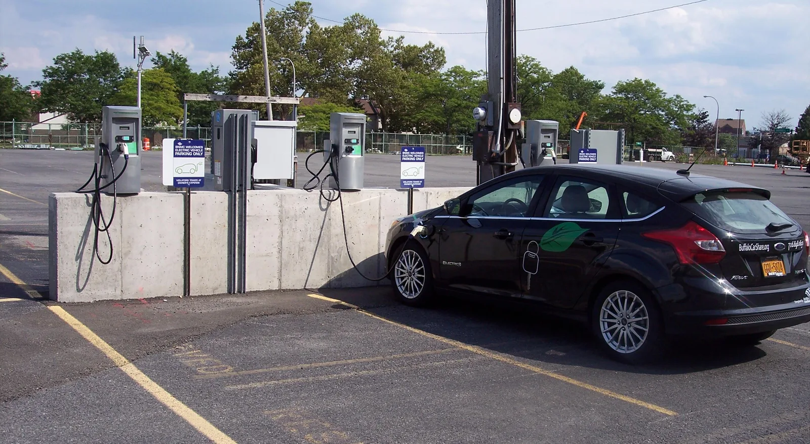

▲ 차량 화재 진압 현장(자료사진). 통계상 전기차 화재 발생률은 내연기관차보다 낮다 ⓒ CarPrism
"전기차는 불이 잘 난다"는 인식은 널리 퍼져 있다. 하지만 국토교통 통계누리와 소방연구원이 집계한 수치를 보면, 이 통념은 발생 건수 기준으로는 사실과 다르다. 문제는 발생 빈도가 아니라 다른 곳에 있다.
1. 발생 건수는 전기차가 오히려 낮다

▲ 전기차 배터리팩. 발생 건수 기준으로는 전기차 화재율이 내연기관차보다 낮다 ⓒ CarPrism
국토교통 통계누리에 소방연구원이 집계한 자료에 따르면, 2023년 기준 등록 전기차 54만 3,900대 중 화재는 72건 발생해 1만 대당 1.32건으로 집계됐다. 같은 시기 내연기관차의 1만 대당 화재 발생 건수는 자료에 따라 1.47~1.9건 사이로 나타나는데, 어느 쪽을 기준으로 삼아도 전기차보다 높은 수치다. "전기차가 불이 더 잘 난다"는 통념은 적어도 발생 빈도 통계상으로는 근거가 약하다.
2. 그래도 늘고는 있다 — 0.4건에서 1.32건으로

▲ 배터리팩들(자료사진). 전기차 화재율은 등록 대수 증가와 함께 점진적으로 상승해왔다 ⓒ CarPrism
다만 절대적인 안전성이 계속 유지된다고 안심할 수는 없다. 전기차 화재율은 2017년 1만 대당 0.4건에서 시작해 2020년까지는 1건 미만을 유지했지만, 등록 대수가 늘어나면서 2023년에는 1.32건까지 상승했다. 아직 내연기관차보다는 낮은 수준이지만, 상승 추세 자체는 지켜볼 필요가 있다.
3. 진짜 문제 — 주정차·충전 중 48%, 그리고 피해액 3배

▲ 주차장에서 충전 중인 전기차(자료사진). 2021~2023년 전기차 화재의 48%가 주정차·충전 중 발생했다 ⓒ Wikimedia Commons (CC0)

▲ 배터리 안전성 테스트 장면(자료사진). 전기차 화재는 주정차·충전 중 발생 비율이 특히 높다 ⓒ Wikimedia Commons (CC BY 4.0)
통계에서 진짜 눈여겨봐야 할 대목은 두 가지다. 첫째, 2021~2023년 3년간 발생한 전기차 화재 139건 중 48%(67건)가 주차·정차 중이거나 충전 중에 발생했다는 점이다. 같은 기간 내연기관차는 주차장·공터에서 발생한 화재 비율이 26%에 그쳐, 전기차가 훨씬 높다. 이는 운전자가 화재 발생을 즉각 인지하기 어려운 상황에서 불이 시작된다는 뜻이며, 지하주차장 등 밀폐 공간에서 발생할 경우 대피와 진압이 더 까다로워진다. 둘째, 2017~2023년 누적 기준으로 화재 1건당 평균 재산 피해액이 전기차는 2,422만 원으로 내연기관차(819만 원)의 약 3배에 달한다는 점이다. 배터리 화재는 진압이 어렵고 재발화 위험이 있어, 발생 빈도는 낮아도 한 번 나면 피해 규모가 커지는 특성이 있다.
4. 통계가 말해주는 것 — 빈도보다 대응력

▲ 국내 도로변 소화전(자료사진). 전기차 화재 대응력을 높이려면 조기 감지·초기 진압 인프라 확충이 관건으로 꼽힌다 ⓒ Wikimedia Commons
이 통계를 종합하면, 정책의 초점이 어디에 맞춰져야 하는지가 분명해진다. 전기차 화재를 무작정 '더 위험하다'고 규정하기보다는, 주정차·충전 중 화재를 조기에 감지하고 피해를 최소화하는 대응 체계를 강화하는 것이 더 실효성 있는 접근이라는 뜻이다. 앞서 카프리즘이 다룬 전기차 화재 안심보험 제도나, 스마트 제어 충전기 보급 확대 정책도 이런 맥락에서 이해할 수 있다.
5. 정리
체크포인트
- 전기차 화재율(1만 대당 1.32건)은 내연기관차보다 낮다.
- 다만 등록 대수 증가와 함께 화재율 자체는 점진적으로 상승하고 있다.
- 전기차 화재의 48%는 주정차·충전 중에 발생한다.
- 평균 재산 피해액은 내연기관차의 약 3배로, 진압 난이도와 피해 규모가 관건이다.